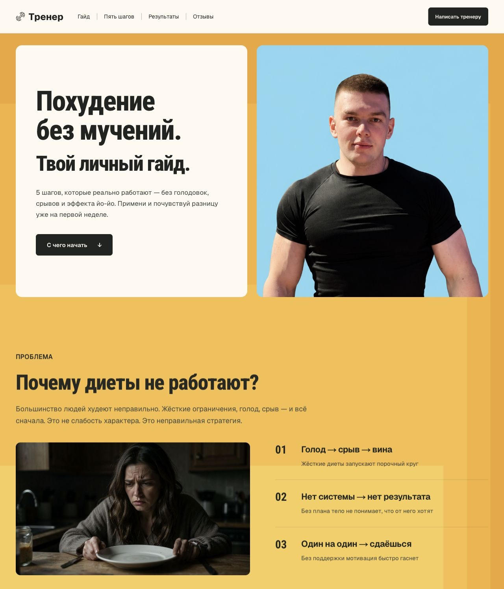
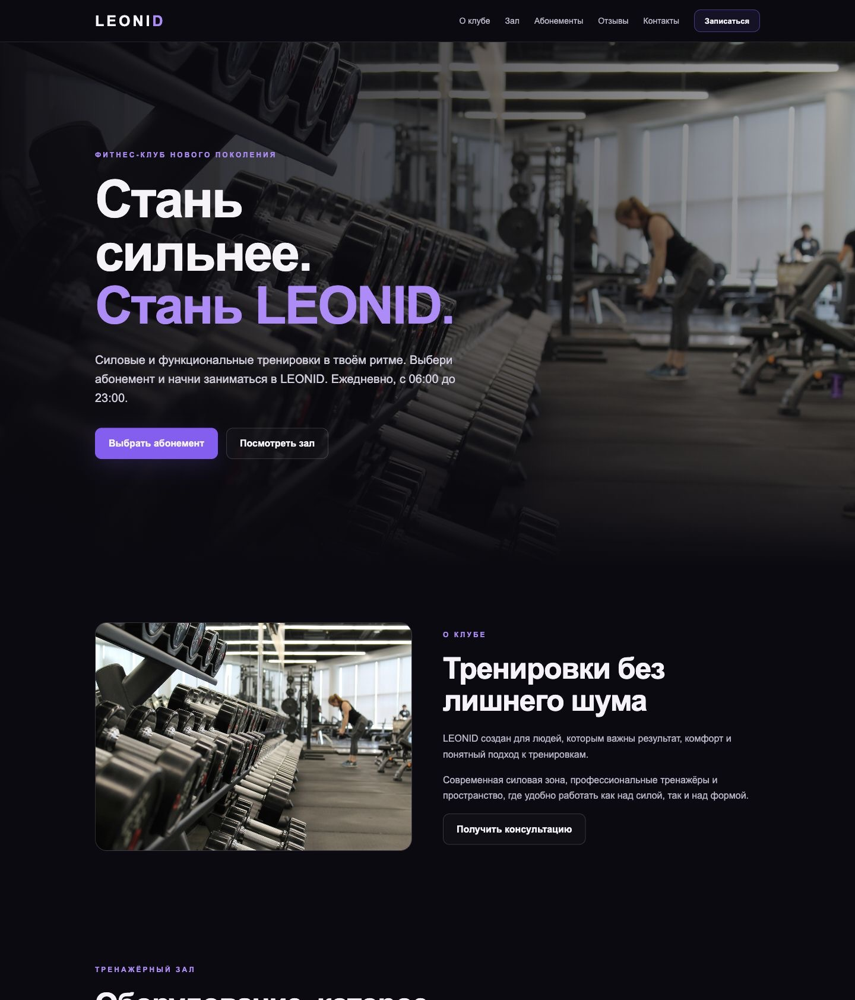
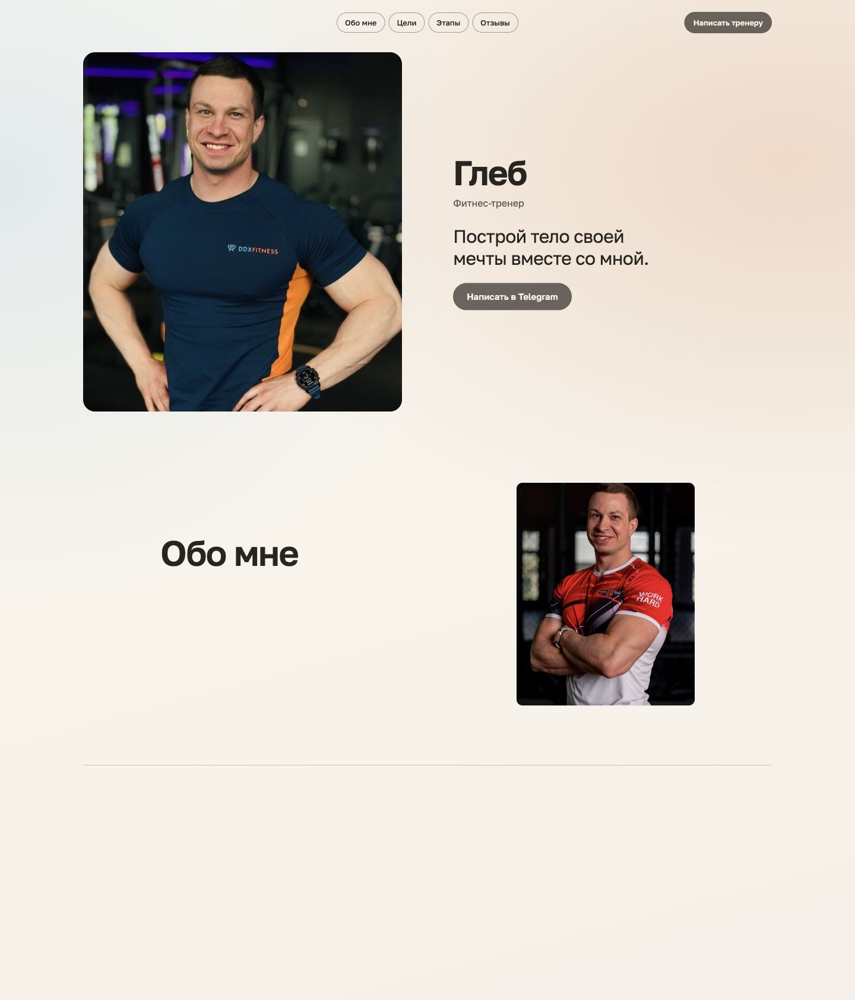

АНДРЕЙ
Персональный сайт фитнес-тренера
Авторский гайд о тренировках, питание, результаты и контакт для записи. Проект о человеке и его подходе.
Превращаю ваши идеи
в работающие сайты и боты.
Я Антон. Разрабатываю сайты, Telegram-ботов и автоматизации. Помогаю понятно рассказать о продукте, упростить запись, собрать заявки и связать привычные инструменты в один процесс. Сначала разбираюсь в задаче, затем предлагаю, как её решить.
Обсудить задачуПоказать зал.
Помочь выбрать абонемент.
Записать на тренировку.
Тренировки, которые становятся частью жизни.
Начать тренировкуЧто должно измениться после запуска? Обсудим ваш продукт, аудиторию и текущий процесс. Определим, нужен ли сайт, бот или связка нескольких инструментов.

Персональный сайт фитнес-тренера
Авторский гайд о тренировках, питание, результаты и контакт для записи. Проект о человеке и его подходе.

Сайт фитнес-клуба · учебный проект
Зал, абонементы, галерея и форма записи. Весь путь знакомства с клубом на одной странице.

Концепт сайта персонального тренера
Акцент на тренировочном подходе и личном общении. Дизайн-концепт, открытый для просмотра.
Расскажите, что хотите сделать.
Разберёмся, с чего начать.